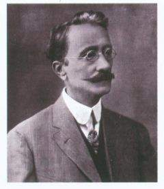
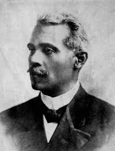

Personajes Relacionados

Concepción Bona
Una de las creadoras de la bandera dominicana, símbolo de la lucha por la independencia.

Casimiro Nemesio de Moya
Diseñador del escudo nacional, representante de la soberanía dominicana.

José Reyes
Compositor de la música del himno nacional, un canto a la libertad.

Emilio Prud'Homme
Autor de la letra del himno nacional, poeta y defensor de la identidad dominicana.